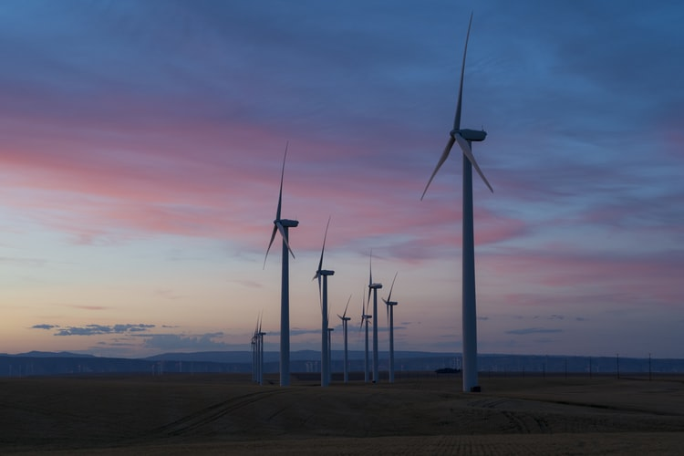

IELTS Writing Task 2 – Give opinion + support it with examples
This guide will help you to answer IELTS writing task 2 questions that ask you to give your opinion and support it with relevant examples. This type of question is very similar to an agree/disagree question. However, now it is necessary to give examples that support your opinion.
In this lesson you will see IELTS writing task 2 sample question + model answer and learn:
- how to choose your opinion
- how to generate arguments and examples
- how to give a band 9 answer for this question
IELTS question - give opinion + examples
Now, we will examine an IELTS writing task 2 question that asks you to give your opinion and support it with relevant examples:
You should spend about 40 minutes on this task.
Climate change is one of the biggest environmental problems of the 21st century. Some people think that humans should stop using oil, gas and coal and switch to alternative energy resources, such as wind and solar power. Others claim that fossil fuels are essential for many industries, and not using them will result in economic recession.
What is your opinion?
Support your point of view with relevant examples.
Write at least 250 words.
Select an opinion and generate examples:
Before writing the essay, you have to choose your opinion out of the two given ones. For the above task, you need to choose from these opinions:
- Stop burning fossil fuels and use only alternative energy resources.
- Continue using fossil fuels since they support the economy.
Then, you have to generate your arguments for the chosen opinion. Let's figure out some ideas for each point of view:
- Stop burning fossil fuels and use only alternative energy resources.
- Damage caused by fossil fuels and the impact of climate change. Example: Storms ravaging western countries or droughts in eastern countries.
- Alternative energy sources can be made viable in the long run. Examples from countries like Germany.
- Continue using fossil fuels since they support the economy.
- Without fossil fuels, the transport system will come to a stop or will become expensive. Example: Food prices in Asian countries shoot up based on the price of fuel.
- Many countries still depend on fossil fuels for heating and energy needs. Example: Coal powers thermal plants in India.
In this essay, we will choose the first opinion.
How to answer this task?
For a band 9 essay, do not forget to use linking structures, good vocabulary and some words from academic wordlist.
- Introduction
- Paraphrase the statement (sentence 1) and give your opinion (sentence 2):
Some people argue that fossil fuels are essential for economic development even though they are highly polluting, while others believe that alternative sources of energy should completely replace oil, coal and natural gas. In my opinion, it is time to adopt cleaner fuels in the interest of the whole world.
- Body paragraphs
- A good way to structure this essay is to write two body paragraphs. Each body paragraph can develop, extend and support one of the points.
Body paragraph 1
Paragraph structure: argument 1 (disadvantages of fossil fuels) + example 1. Moreover, supporting argument + example.
First of all, pollution caused by fossil fuels is not only destroying our environment but also causing great damage to our health. For example, air pollution causes life-taking diseases such as asthma and cancer. Under these circumstances, using clean energy is a necessity, rather than a choice. Moreover, phenomena like global warming and climate change are no longer in the distant future. The effects of these changes are visible even now. For example, studies show that the recent storms that ravaged Europe are a direct result of climate change.
Body paragraph 2
Paragraph structure: argument 2 (why alternative energy is good) + example 2. Furthermore, supporting argument + example.
Secondly, alternative sources of energy can be made economically viable in the long run. To begin with, the exploitation of such energies will give rise to new industries. This, in turn, will result in more employment opportunities. Furthermore, new research can help in making these energies more efficient so that they can be used in traditional industries. For instance, in countries like Germany and the Netherlands, wind power is extensively used by households and manufacturing industry. Thus, with time, renewable fuels can contribute to the development of the economy.
- Conclusion
- The conclusion must summarise your body paragraphs:
In conclusion, I think that the world should try to stop using fossil fuels, and we should start using alternative energy sources. This is because a healthy environment is of the utmost importance to our future, and cleaner fuels can be made economically viable in the long run.
Band 9 answer sample
Some people argue that fossil fuels are essential for economic development even though they are highly polluting, while others believe that alternative sources of energy should completely replace oil, coal and natural gas. In my opinion, it is time to adopt cleaner fuels in the interest of the whole world.
First of all, pollution caused by fossil fuels is not only destroying our environment but also causing great damage to our health. For example, air pollution causes life-taking diseases such as asthma and cancer. Under these circumstances, using clean energy is a necessity, rather than a choice. Moreover, phenomena like global warming and climate change are no longer in the distant future. The effects of these changes are visible even now. For example, studies show that the recent storms that ravaged Europe are a direct result of climate change.
Secondly, alternative sources of energy can be made economically viable in the long run. To begin with, the exploitation of such energies will give rise to new industries. This, in turn, will result in more employment opportunities. Furthermore, new research can help in making these energies more efficient so that they can be used in traditional industries. For instance, in countries like Germany and the Netherlands, wind power is extensively used by households and manufacturing industry. Thus, with time, renewable fuels can contribute to the development of the economy.
To conclude, I think that the world should try to stop using fossil fuels, and we should start using alternative energy sources. This is because a healthy environment is of the utmost importance to our future, and cleaner fuels can be made economically viable in the long run.
(276 words)